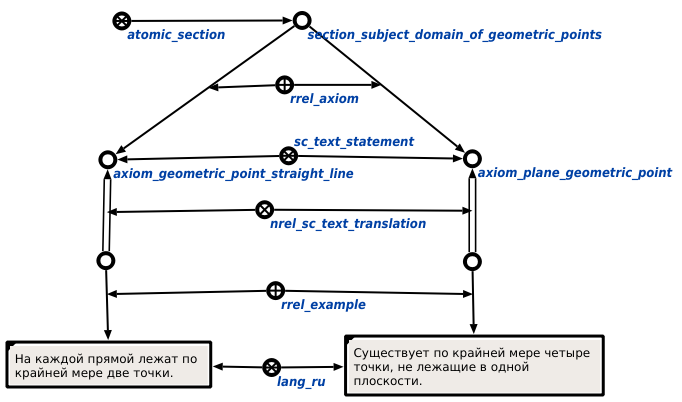

Команда поиска аксиом для заданного раздела предназначена для нахождения аксиом заданного раздела. Единственным аргументом команды является раздел, в рамках которого необходимо найти все аксиомы. Результатом выполнения команды является множество утверждений, найденных для заданного раздела с трансляцией их формулировок, сам раздел и множество связывающих его дуг с атрибутом аксиома'. В ответ для раздела "Раздел. Предметная область геометрических точек", например, будут добавлены все элементы, указанные в следующем фрагменте БЗ:
